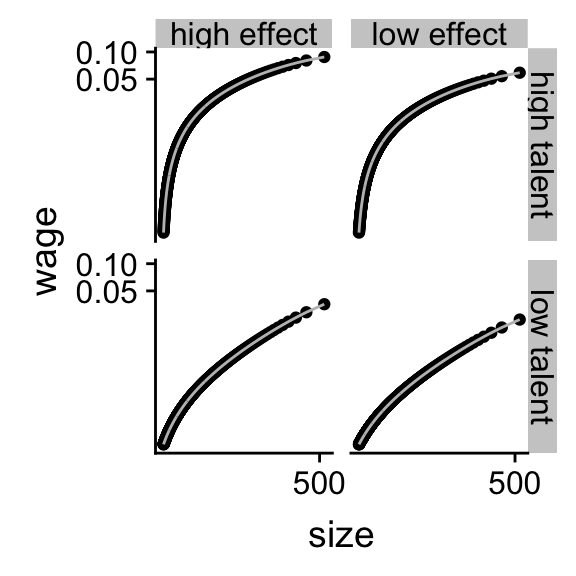
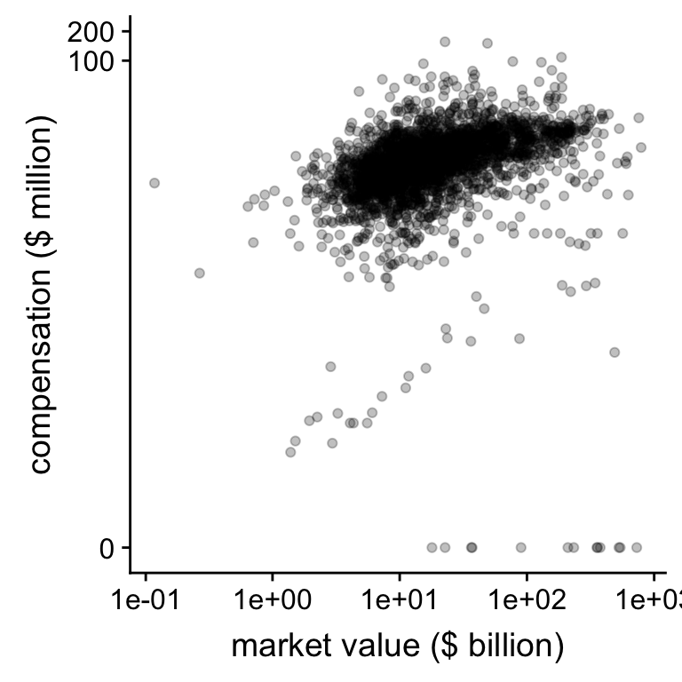
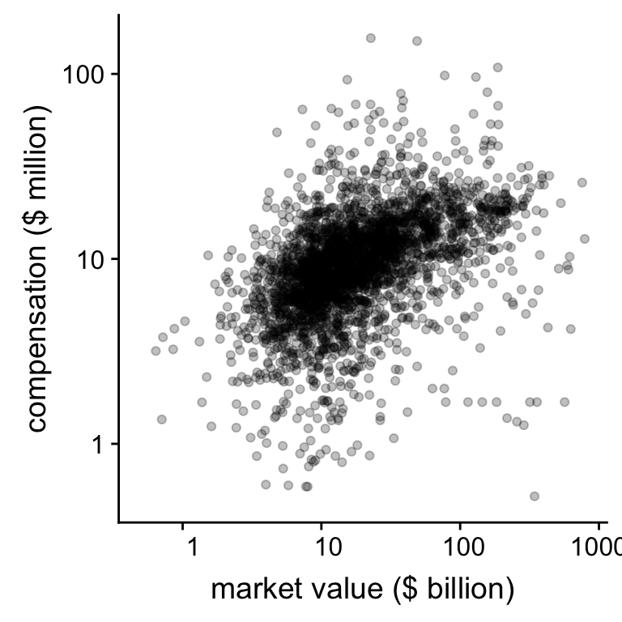

Chapter 6 Linear regression in R
Most of the statistical tests in accounting and finance are some
variation on a linear regression. In this section, I am assuming
that you vaguely know what a linear regression is. I am not going
into the mathematical details but I am focusing on the how to
run these tests in R.
6.1 Introduction
There are a number of different ways how we can represent a linear regression. The first expression shows how the outcome vector \(\mathbf{y}\) is a linear combination of a number of observable vectors \(\mathbf{x_i}\) and an unobserved vector \(\mathbf{e}\). The second line is an abreviated notation where we group all the observable vectors in a matrix \(X\). The typical assumption is that the unobserved vector follows a normal distribution with a standard deviation \(\sigma\). The last line explicitly states that \(\mathbf{y}\) has a normally distributed random component.
\[\begin{align} \mathbf{y} &= a + b_1 \mathbf{x_1} + ... + b_n \mathbf{x_n} + \mathbf{e} \\ \mathbf{y} &= a + \mathbf{b} X + \mathbf{e} \\ \mathbf{y} &\sim \mathcal{N}(a + \mathbf{b} X, \sigma) \end{align}\]
To esimate the coefficients \(a\), \(b_1\) and \(b_2\) in R, we have to run the following piece of code.
reg <- lm(y ~ x1 + x2, data = my_data_set)
summary(reg)6.2 Linear regression with non-linear theories
Linear regressions can be used with a non-linear theory with some transformations. The matching theory of CEO compensation implies that when there are an infinite amount of firms, the relation between the CEO compensation (\(W\)) and the firm value (\(V_0\)) is given by equation (6.1).
\[\begin{equation} \tag{6.1} W = aV_0^b \implies ln(W) = ln(a) + b \times ln(V_0) \end{equation}\]
We can see how well the logarithmic transformation works on the simulated data by transformating the scale of Figure 5.4
plot_exp +
scale_x_continuous(trans = "log",
breaks = scales::pretty_breaks(n = 2)) +
scale_y_continuous(trans = "log",
breaks = scales::pretty_breaks(n = 2))
Figure 6.1: The logarithmic transformation of simulated data
One reason why it does not work perfectly is that the reservation wage \(w_0\) might be set too low in the simulation. You can see that the line is approximately linear for the largest firms. The real models assume that we have an infinite number of firms and we are only interested in the largest 500 firms, that is the most right part of the graph. This explanation also illustrates how simulating from your theory can help you to understand the theory better. One of the homework exercises asks you to check whether the transformation works better once you simulate more firms.
Let us now see how well the log transformation works on the real S&P500 compensation data. First, we load the data in.
us_comp <- readRDS("data/us-compensation.RDS") %>%
rename(total_comp = tdc1)
us_value <- readRDS("data/us-value.RDS") %>%
rename(year = fyear, market_value = mkvalt)
summary(us_value$market_value)## Min. 1st Qu. Median Mean 3rd Qu. Max. NA's
## 117.3 9097.9 15903.9 36905.9 33633.6 1073390.5 342We have a bunch of observations with missing values (NA) for
the market value of the firm. I will not further investigate this
but you should definitely do this in your own project.
We combine the market value data with the CEO compensation data
with the left_join function. left_join is a function that
joins two datasets together based on key variables that identify
which observations from one dataset should be matched with which
observations from the other dataset. The join functions in the
tidyverse can be a lifesaver if you are working with multiple
datasets that need to be merged.
us_comp_value <- left_join(select(us_comp, gvkey, year, total_comp),
us_value, by = c("year", "gvkey"))
glimpse(us_comp_value)## Observations: 3,458
## Variables: 4
## $ gvkey <chr> "001045", "001045", "001045", "001045", "001045", "001...
## $ year <dbl> 2011, 2012, 2013, 2014, 2015, 2016, 2017, 2011, 2012, ...
## $ total_comp <dbl> 5526.835, 656.226, 19092.978, 12301.976, 11418.547, 14...
## $ market_value <dbl> 117.3438, 266.5571, 6591.9923, 37405.5843, 26452.7417,...Because there are some CEOs with \(0\$\) compensation, I use the \(log(x+1)\) transformation. Another option would have been to exclude these obervations.
reg <- lm(log(total_comp + 1) ~ log(market_value + 1),
data = us_comp_value)
# summary(reg)
print(summary(reg), digits = 1L)##
## Call:
## lm(formula = log(total_comp + 1) ~ log(market_value + 1), data = us_comp_value)
##
## Residuals:
## Min 1Q Median 3Q Max
## -9.9 -0.2 0.1 0.4 2.9
##
## Coefficients:
## Estimate Std. Error t value Pr(>|t|)
## (Intercept) 6.69 0.16 42 <2e-16 ***
## log(market_value + 1) 0.24 0.02 15 <2e-16 ***
## ---
## Signif. codes: 0 '***' 0.001 '**' 0.01 '*' 0.05 '.' 0.1 ' ' 1
##
## Residual standard error: 1 on 3153 degrees of freedom
## (303 observations deleted due to missingness)
## Multiple R-squared: 0.06, Adjusted R-squared: 0.06
## F-statistic: 2e+02 on 1 and 3153 DF, p-value: <2e-16The summary gives way to much information but I am just
restricting the number of significant digits because that is my
biggest concern. You can just use summary(reg). We can also
plot the log-log relation between firm value and CEO compensation
in figure.
plot_check <-
ggplot(data = us_comp_value,
aes(y = total_comp, x = market_value)) +
geom_point(alpha = .25) +
scale_x_continuous(trans = "log1p",
breaks = scales::log_breaks(n = 5, base = 10),
labels = function(x)format(x/1000, digits = 2)) +
scale_y_continuous(trans = "log1p",
labels = function(x)format(x/1000, digits = 2)) +
ylab("compensation ($ million)") +
xlab("market value ($ billion)")
print(plot_check)## Warning: Removed 303 rows containing missing values (geom_point).
Figure 6.2: CEO compensation and firm value on the log-log scale
On the log-log scale, we see that there are some CEOs with very low compensation compared to the bulk of the observations. In the next figure, we will just ignore those.
plot_check2 <- plot_check +
scale_x_continuous(trans = "log1p", limits = c(500, NA),
breaks = scales::log_breaks(n = 5, base = 10),
labels = function(x)format(x/1000, digits = 2)) +
scale_y_continuous(trans = "log1p", limits = c(500, NA),
breaks = scales::log_breaks(n = 5, base = 10),
labels = function(x)format(x/1000, digits = 2)) ## Scale for 'x' is already present. Adding another scale for 'x', which
## will replace the existing scale.## Scale for 'y' is already present. Adding another scale for 'y', which
## will replace the existing scale.print(plot_check2)## Warning: Removed 344 rows containing missing values (geom_point).
Figure 6.3: CEO compensation and firm value on the log-log scale
Although there still a lot of variation visible, the relation in Figure 6.3 looks reasonably linear. The goal of plotting the data is to get an idea whether the data reflect the explicit and implicit assumptions in your theory and your statistical model. One of those assumptions is that the relation between compensation and value is linear on the log-log scale. Plotting the data also showed us that there are some CEOs with very low or \(0\) compensation. In a real, study you would want to investigate why this is the case. For instance, you might have an error in the database.